1
For making soft sensor we used antistatic foam, which is semi conductive, and conductive fablic. At first we placed on the different sides of foam each piece of fabric and sewed them together. Then put on each side aligator clip (connected to fabric) and measured resistance using multimeter.
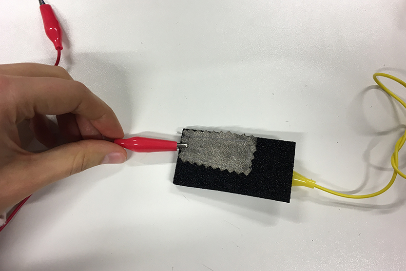
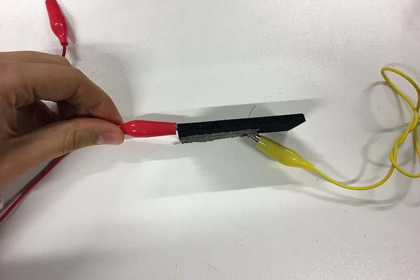
I measured resistance in two conditions: pressed (0,12 kOm) and calm (1,54 kOm). The harder you press the material the less resistance it has and it means that voltage is increasing.
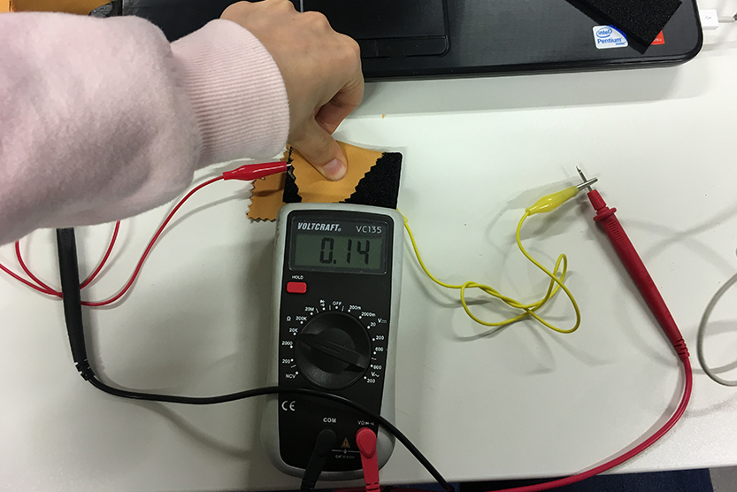
2
Next step is connecting to Arduino. To do it we need to add resistance which is equal to measured resistance in calm condition.
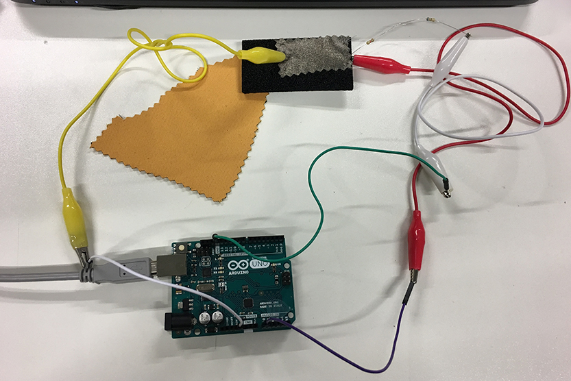
Connection should be next: Resistance connects to one of aligator clips on the one end and second end is connected to GND. The other side of this aligator clip goes to A0. The second aligator clip should be connected to V5.
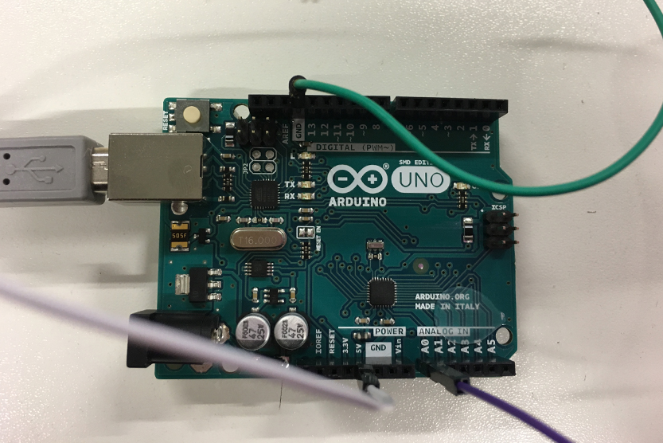
3
Then open Arduino on your computer and go to File/Examples/Analog/AnalogInOutSerial
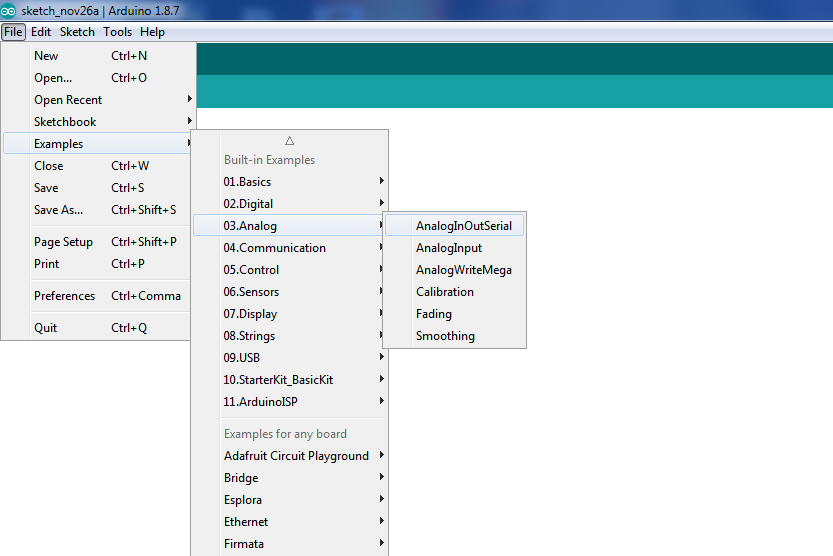
In a new window you have to change pins to those you are using.
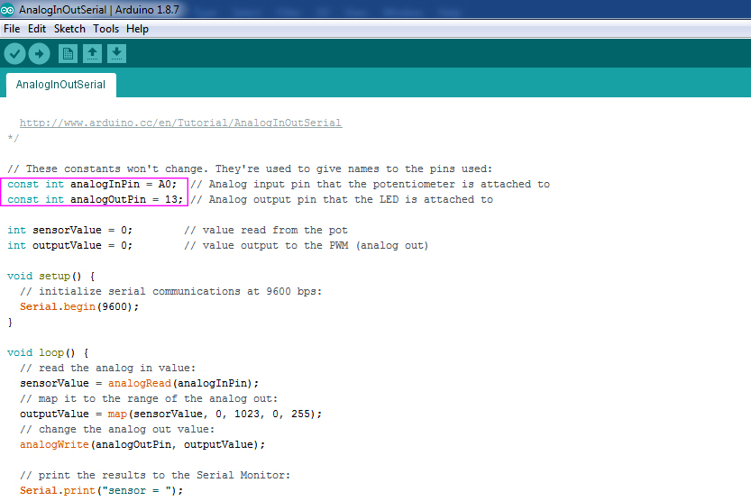
Then you have to verify your code. If it is fine, connect Arduino to computer and check Board and Port. After that you can upload code.
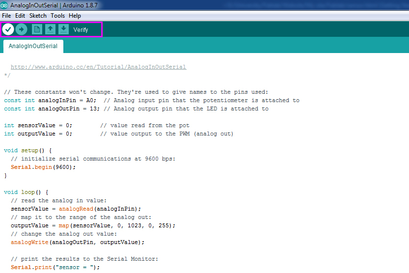
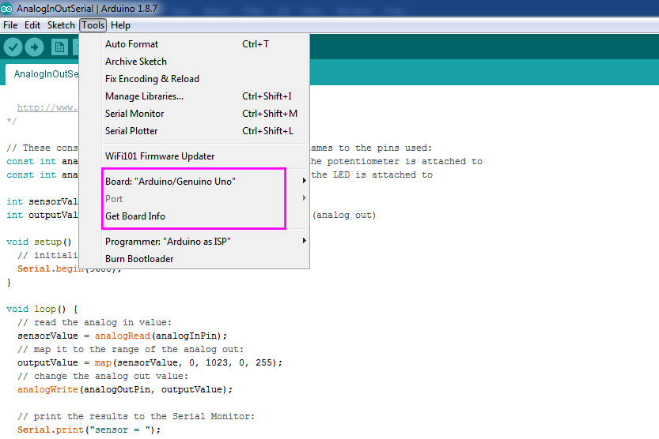
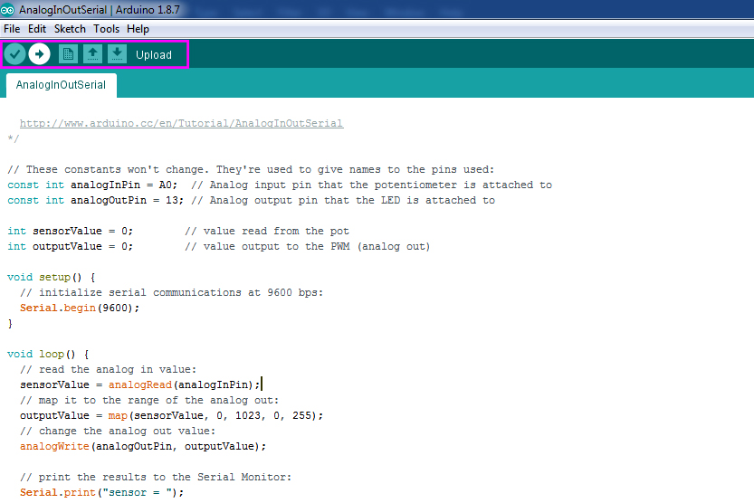
4
In the right top corner you can find an icon of Serial monitor. If you press on it, a new window will be opened in which you can see in real time parameters from your sensor.
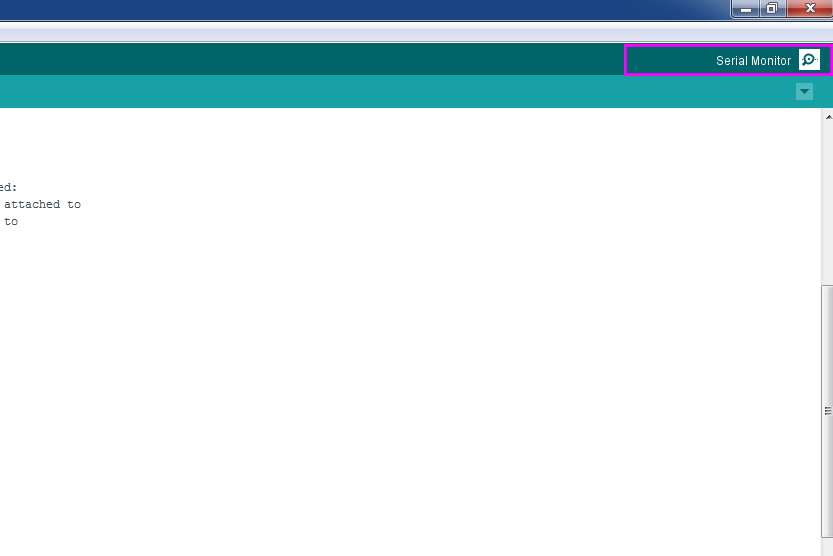